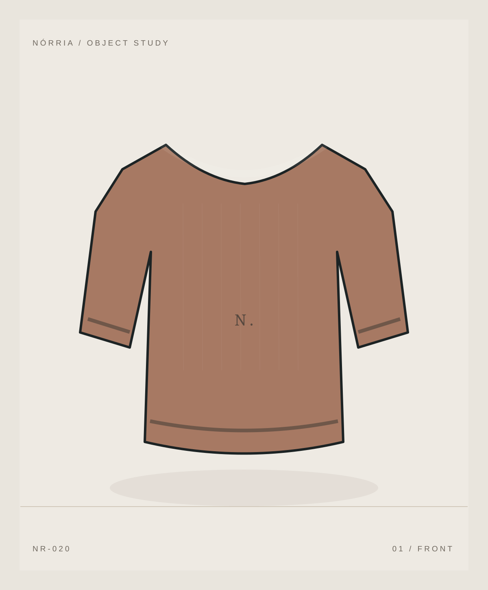

BRAND MANIFESTO / NÓRRIA
Less noise. More meaning.
NÓRRIA is an independent brand-design exercise in purposeful dressing. A fictional proposal that makes no claims about production, suppliers or verified sustainability.
01 / NÓRRIA
A wardrobe of choices.
The name suggests a contained identity: the meeting point between a defined silhouette and the habits of the people who wear it. Nothing shown has been manufactured; the catalog is an interface, product and communication study.
Art direction brings together mineral surfaces, natural tones and expressive typography. Digitally, this becomes useful filters, variant-aware product pages and transparent decision-making.
Read the case study
02 / PRINCIPLES
01 — Quiet aesthetic
02 — Accessible information
03 — Choices without pressure